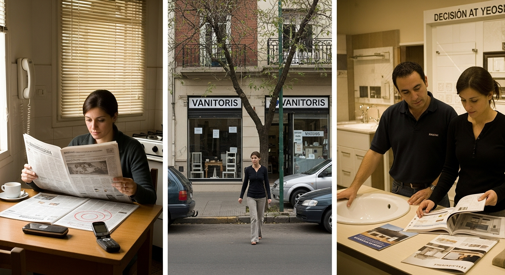
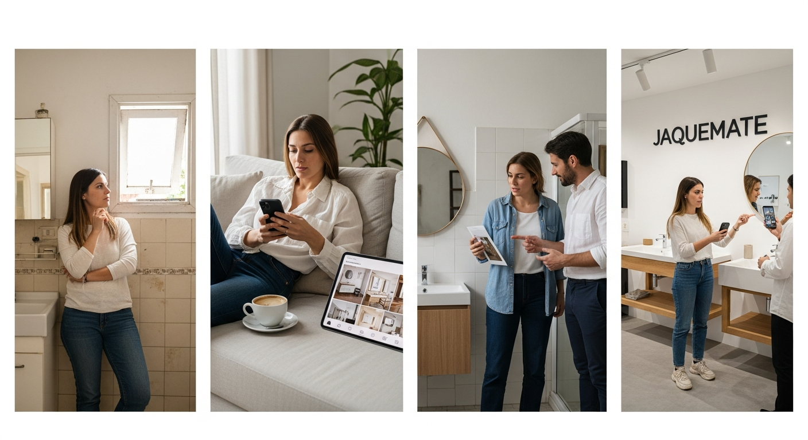
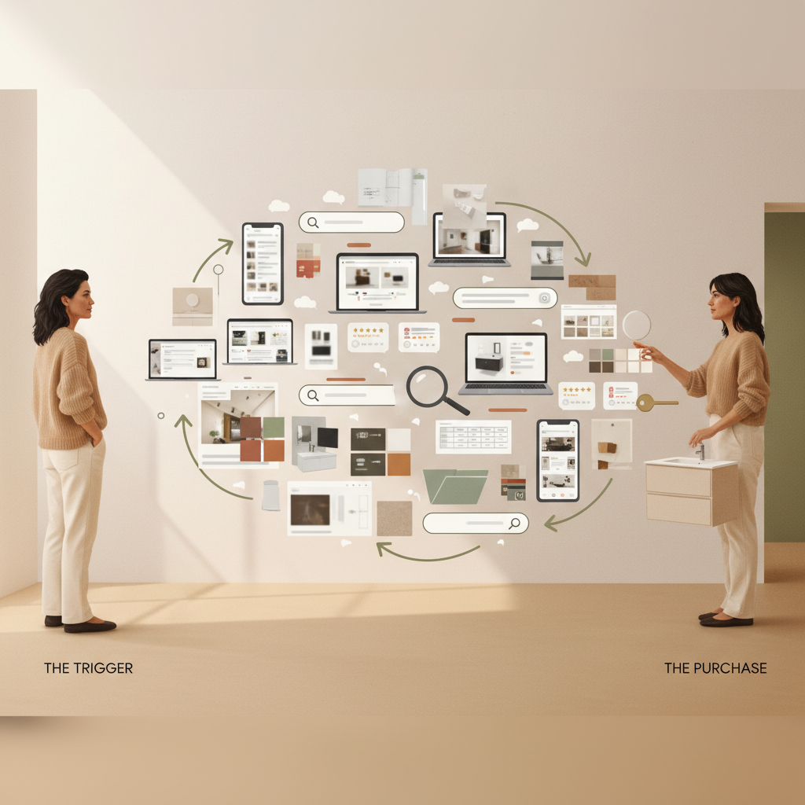

Antes de hablar de qué construir digitalmente, conviene mirar lo que ya está construido. Las herramientas digitales y la inteligencia artificial no crean valor de la nada — amplifican el que ya existe. Y en Jaquemate hay mucho para amplificar: producto, estética y reputación instalados después de medio siglo en el rubro.
La marca, el producto y la reputación que vimos recién no se reparten parejo: detrás operan tres unidades con clientes, tickets y ciclos completamente distintos. La web actual los comunica como si fueran lo mismo. Antes de mirar etapa por etapa, conviene separarlos — cada uno necesita su propio funnel, su propio SEO y sus propias herramientas.
"Juan, reformando el baño"
Particular de 35-50 años. Quiere algo lindo, moderno, que llegue rápido. Compra online, autoservicio, decisión rápida.
"María, cocina a medida"
Particular 35-55 años, reformando o construyendo. Compra emocional + racional. Asesoramiento con arquitectas. No vende online: capta leads.
"Estudio Mizrahi, edificio de 18 pisos"
Estudios, constructoras, fideicomisos. Buscan confiabilidad, plazos, precios diferenciales. Cliente recurrente, ticket más alto, casi cero presencia digital actual.
Cada decisión digital — desde el SEO de una ficha de producto hasta un agente de IA en WhatsApp — solo tiene sentido si entiende la psicología del cliente que está del otro lado de la pantalla. Las herramientas no son el fin; son medios para acompañar mejor a la persona en su recorrido.
Por eso el resto de este diagnóstico no se organiza por canales ni por tecnologías: se organiza por las cinco etapas del recorrido del cliente — descubrimiento, consideración, conversión, entrega y fidelización. En cada una vamos a entender primero al usuario, después mirar qué pasa hoy en Jaquemate y recién ahí proponer la herramienta concreta.
El recorrido del cliente tiene cinco etapas. Cada una con su propia psicología, sus propios canales y sus propias herramientas. El resto del diagnóstico mira cada etapa por dentro — pero antes, conviene ver el mapa completo.
El descubrimiento es el momento en que el cliente identifica que tiene una necesidad y arranca a buscar. Hoy esa búsqueda empieza casi siempre en Google, Pinterest o Instagram. Si Jaquemate no aparece ahí — bien posicionado, con la información correcta — directamente no entra en la consideración.
El descubrimiento siempre existió. Lo que cambió radicalmente es cómo se hace. Antes pasaba por el diario y el barrio; hoy pasa por Pinterest, Instagram y Google. Diseñar la presencia digital alrededor de esas nuevas conductas es la condición para aparecer.

Recomendación del círculo cercano, aviso en el diario o paso por la vidriera del barrio.
Recorre físicamente las opciones que tenía cerca. La distancia era el filtro principal.
Compara catálogos en papel, confía en el asesor de toda la vida, cierra ahí mismo.

El detonante es propio: convive con un espacio que ya no le gusta y arranca a imaginar la reforma.
Guarda imágenes, arma tableros, sigue cuentas de baños. La inspiración pasa antes que la marca.
Comparte capturas por WhatsApp, discute opciones con la pareja parados frente al baño actual.
Aparece físicamente recién para validar lo que ya eligió en pantalla. Mitad de la decisión está tomada.
El primer showroom ahora es Google.
El primer momento donde la empresa lo "ve" — la conversación con un asesor — es el punto número 30. Los 29 anteriores son donde se gana o se pierde la venta.
Decidió reformar el baño. Buscó "vanitorys CABA"
Abrió 8 sitios en pestañas y comparó precios y modelos
Buscó "vanitorys colgantes 60cm" y guardó 4 productos en favoritos
Hizo scroll en #vanitoriosbaño, guardó 12 imágenes
Creó tablero "Baño nuevo" con 30 pins
Leyó 40 reviews de las 6 tiendas que más le gustaron
Mandó fotos del baño actual a su pareja
Pidió cotización a 3 tiendas. Una no contestó
Vio reels de instalación, entendió cómo se monta un colgante
Comparó las 3 tiendas finalistas. Descartó una por precio
Mostró 2 modelos a su pareja. Decidieron uno
Buscó "Jaquemate horarios" y revisó las reviews una vez más
Hola, vine a ver vanitorys, ¿me podés mostrar opciones para un baño chico?
De los ~30 puntos de contacto, casi todos pasan por Google: búsqueda, Maps, reseñas, comparativas. El primer showroom dejó de ser físico.
El journey hoy se reparte entre cinco plataformas, pero Google y Mercado Libre se llevan 8 de cada 10 búsquedas iniciales. Cada una con su lógica, su momento del recorrido y su forma de ser encontrado.
Datos base · Estudio Anual CACE 2025 — el 85% de los argentinos investiga online antes de comprar en una tienda física, principalmente vía buscadores (59%) y marketplaces (36%). Cruces con Salsify Consumer Research 2025, Statista LATAM 2024 y Pinterest Business 2025. Recomendación: validar con datos propios preguntando a los clientes "¿de dónde nos conoció?".
Al buscar "Jaquemate" o "JQM" en Mercado Libre no se detecta un perfil identificable bajo el nombre de la marca. Si el catálogo existe pero no aparece bajo la marca, 3 de cada 10 clientes potenciales arrancan el journey sin ver a Jaquemate. Acción inmediata: validar internamente la presencia en ML — si existe, ajustar nombre, descripción, productos y reseñas para que sea encontrable; si no existe, evaluar si abrir uno como canal complementario.
Antes de mostrarle resultados al usuario, Google ensambla pedazos. Pensalo como un motor: arriba entra la búsqueda del cliente, en el medio Google procesa seis piezas que armás vos, y abajo aparece la SERP. Tocá cada pieza para girarla y ver cómo está hoy en Jaquemate.
Cada pieza tiene un lado A (qué lee Google y qué muestra al usuario) y un lado B (cómo está en Jaquemate y qué hay que modificar). Tocá para girarla.
<title> y la <meta description> de cada página.El title del home dice solo "jaquemate". Metas con HTML entities literales (fabricación) y texto cortado.
Reescribir titles con keywords del rubro ("Vanitorys y muebles de baño · Jaquemate") y metas únicas por categoría. Quick win.
<h1> y la jerarquía de subtítulos (h2, h3).H1 del home dice "jaquemate" (igual al title). Studio tiene typo "Proyectá tutu hogar". PLPs sin H2/H3.
H1 descriptivo en cada página. Corregir el typo del Studio. Sumar H2/H3 en categorías para captar long-tail.
application/ld+json con datos etiquetados.Tienda tiene 19 JSON-LD en home y ~15 por PDP. Studio tiene cero. PDPs sin Review ni BreadcrumbList.
Sumar schema en Studio. En PDPs Tienda agregar Review + BreadcrumbList para mostrar estrellas en la SERP.
Perfil incompleto. Sin productos cargados, sin posts publicados, sin descripción SEO. Solo aparece dirección y rating.
Cargar el catálogo principal, publicar 1 post mensual y escribir descripción con keywords. Es la palanca local más rápida.
4.6★ con 545 reseñas. Único factor que funciona — y se construyó solo, sin gestión activa.
Pedir review automáticamente 15 días post-entrega vía WhatsApp/email. Triplicar el flujo y responder todas — eso pesa más que cantidad sola.
40+ clientes B2B nombrados como texto en /dpto-obras/, sin links salientes ni casos publicados que generen menciones de vuelta.
Publicar casos de obra con link al cliente B2B. Activar relación con prensa local del rubro reforma/diseño para conseguir menciones.
Cuatro zonas con reglas distintas para vanitorys CABA. Tocá cada zona del SERP para ver el plan de acción concreto que necesita Jaquemate para ganarse ese lugar.
Google subasta cada espacio al mejor postor — pero cobra menos a quien tiene mejor Quality Score (relevancia de la landing + click-through histórico). Una buena landing puede costar la mitad por click que una landing pobre.
Tiene 26 anuncios activos (verificable en el Centro de Transparencia de Google Ads, anunciante MOENCA SRL) para Tienda y Studio. Pero el sitio al que llevan tiene problemas que Google penaliza:
H-001H-003H-005H-022Resultado: Quality Score bajo → paga más caro cada clic + convierte menos cuando el usuario llega.
/vanitorys-caba/, /griferias-caba/) con schema y copy alineado al ad copyEl AI Overview cita las fuentes más completas y mejor estructuradas del rubro. Pesan: schema markup, claridad del contenido, actividad reciente, backlinks de autoridad y FAQs reconocibles. Cuando la IA tiene que elegir entre web, Instagram y otros, gana el que tenga la información más legible y fresca.
Caso real verificado en modo IA de Google (query "remodelar cocina CABA", 2026-05-06):
jaquemate.com.ar ni studio.jaquemate.com.arPor qué pasa: entre las dos webs y el Instagram, Google eligió IG porque tiene más actividad reciente y texto indexable. La home de Tienda no tiene contenido SEO, Studio no tiene schema. IG gana por descarte.
Costo real: el usuario clickea y cae en un feed de fotos, no en una landing con CTA. Tráfico regalado que no convierte.
Organization y todos los meta — para que Google lo entienda como entidad únicaReview + BreadcrumbList en PDPs de TiendaGoogle muestra los 3 negocios más relevantes según completitud del Google Business Profile + cantidad y frescura de reseñas + proximidad. La actividad reciente del perfil (posts, fotos, respuestas) pesa tanto como el rating.
Tiene el mejor rating del corredor (4.6★ con 545 reseñas) pero el GMB vacío lo hunde. Pierde frente a Marash (4.5★ 364) y Kitchen & Bath (3.9★ 385) por mejor carga de perfil.
Google rankea por relevancia y autoridad. Pesan: title + meta + H1 que matcheen la intención de búsqueda, contenido SEO real, schema, velocidad de carga y backlinks de sitios temáticos.
Cuatro problemas que tiran el ranking abajo:
/productos/ con TTFB de 2 segundos — mata el ranking/productos/ — TTFB 2s mata el rankingLa trayectoria, el catálogo y la reputación están — pero el sistema no los puede leer porque la implementación técnica está descuidada. El detalle, factor por factor:
Pase técnico del 2026-05-05 sobre 2 dominios + 14 páginas muestreadas (home, 3 PDPs, 2 PLPs, blog, Studio, Dpto. Obras, sitemap, robots.txt y headers HTTP).
Tienda y Studio se construyeron en momentos y con lógicas diferentes. Tocá cada uno para ver cómo está parado.
Es el sitio principal. Tema profesional, catálogo grande, fundamentos sólidos — pero el título y el encabezado del home dicen solo "jaquemate".
<title> y el <h1> del home dicen solo "jaquemate" — sin keywords, sin locación, sin propuesta
/productos/ tarda 2 segundos en abrir (TTFB) — Google penaliza ese tiempo
Stack moderno y bien hecho visualmente — pero es una sola página con anclas. Sin estructura interna, sin SEO, sin mapa.
sitemap.xml) — Google no descubre rutas internas
/cocinas y /vestidores devuelven error 404
<h1> de la home: "Proyectá tutu hogar" — lo primero que ve un usuario
Dentro de jaquemate.com.ar hay una página /jqm-studio/ que rankea en Google por encima del subdominio dedicado (studio.jaquemate.com.ar). El sitio principal le está comiendo el SEO al sitio premium. Resultado: dos URLs compitiendo por la misma búsqueda y la marca de mayor margen pierde.
title y el H1 del home de Tienda son ambos solo "jaquemate"<title> de jaquemate.com.ar dice solo "jaquemate" — sin "vanitorys", sin "muebles de baño", sin "CABA"<h1> del home repite la misma palabra: "jaquemate"Por qué importa: para búsquedas como "vanitorys CABA" o "muebles de baño Buenos Aires" el sitio compite con cero contexto. Desperdicio doble: title + H1 dicen lo mismo y ninguno aporta keyword.
tutu hogar"<h1> visible de la home de Studio<title> HTML está correctamente escrito — Google indexa bienPor qué importa: el H1 es lo primero que ve un usuario al entrar a Studio — la unidad de mayor ticket promedio ($5M–$30M+). Pega de lleno en percepción de profesionalismo y confianza, justo donde se necesita más.
desctacados"desctacados)Por qué importa: el menú es lo que se repite en toda la navegación. Mata la percepción de prolijidad ante un cliente que está comparando con la competencia en pestañas paralelas.
Por qué importa: Google Maps prioriza perfiles completos en búsquedas locales. Hoy los muestra menos y los compara peor contra Kitchen & Bath Showroom (mismo corredor) que sí tiene productos cargados.
/cocinas y /vestidores devuelven error 404/jqm-studio/ dentro de Tienda gana en SEO al subdominio dedicadoPor qué importa: Studio es la unidad premium pero el sitio está rankeando peor que una página secundaria de la Tienda. Cada página interna que falte es una keyword que se pierde.
canonical ni sitemap.xml: Google no entiende qué URL es la oficialPor qué importa: esa inconsistencia agrava la canibalización con /jqm-studio/. Sin schema en Studio, Google premia a la página de Tienda que sí lo tiene.
Por qué importa: sin contenido textual, Google no puede asociar el dominio con el rubro. Es la diferencia entre rankear top 3 y aparecer recién en página 2 para búsquedas con intención de compra.
"Marca 1 de jaquemate"Por qué importa: alt vacío significa cero valor SEO, cero accesibilidad y cero aparición en Google Imágenes. Para una categoría visual como muebles de baño, perder Google Imágenes es perder una vía de captación entera.
Resolver los hallazgos del Paso 3 destapa la cañería. Pero el descubrimiento no se gana una vez — se sostiene mes a mes. Cuatro frentes concretos para que Jaquemate aparezca cuando alguien busca un baño o una cocina, y para que esa presencia no dependa de la voluntad de nadie.
Auditar una vez sirve para destapar la cañería. Pero el SEO se gana en el tiempo, sostenido: keyword research permanente, calendario editorial, monitoreo de posiciones, ajustes constantes. Hoy todo eso se acelera con IA — Claude o GPT generan briefs de contenido a partir del top 10 de Google, agentes propios cruzan Search Console con tendencias y proponen el siguiente artículo, herramientas como Surfer o NeuronWriter optimizan textos por keyword. Lo que antes requería un equipo dedicado, hoy lo hace una persona con IA bien usada.
Search Console + Ahrefs o Semrush para keyword research permanenteClaude API para generar briefs de contenido a partir del top 10Surfer o NeuronWriter para optimización del texto por keywordNotion como calendario editorial y tracking de posicionesStudio y Tienda son dos sitios técnicamente independientes (Next.js vs Tiendanube) — pero con menús prácticamente idénticos. El usuario que clickea no sabe en qué sitio está. Combinado con que /jqm-studio/ dentro de Tienda rankea mejor que el subdominio dedicado, la unidad premium pierde tráfico y autoridad de marca.
Mantener Tienda y Studio como sitios separados. Studio es la unidad premium, con identidad propia, ticket distinto y un público que llega con otra cabeza. Fusionarla bajo Tienda diluye el posicionamiento y mezcla dos conversaciones diferentes. Pero "separados" no significa "como están hoy". Hay que reorganizar para que dejen de competir entre sí y empiecen a sumarse.
/jqm-studio/ dentro de Tienda.
Esa página rankea mejor que el subdominio dedicado y le come el SEO al sitio premium. Hay dos opciones técnicas: canonical apuntando al subdominio, o redirigir con 301. Lo que no puede pasar es que las dos URLs sigan peleando por las mismas keywords.
/cocinas, /vestidores, /proyectos), schema markup, sitemap.xml, canonical y Organization propio. Sin esto, Google no puede entender a Studio como un sitio.
El GMB está vacío y el blog tiene 4 posts no por desinterés: publicar requiere energía y siempre hay algo más urgente. La solución no es contratar a alguien más — es automatizar el flujo. Un workflow en n8n se dispara con cada proyecto entregado del Studio: (1) Claude genera la copy, (2) recorta la mejor foto, (3) postea en GMB, (4) postea en Instagram, (5) deja un draft de blog para revisión humana. Un proyecto entregado se vuelve presencia digital en todos los canales sin esfuerzo extra.
n8n orquesta el workflow completo (self-hosted o cloud)Claude API genera la copy y resume el proyecto en tono de marcaGoogle Business API publica el post en GMBMeta Graph API publica el post en InstagramGoogle premia perfiles que responden rápido y a todos. Hoy las 545 reseñas están casi sin respuesta. Un agente IA se dispara con cada nueva reseña, lee el contenido, identifica el tema (asesoramiento, instalación, demora, calidad) y propone una respuesta personalizada — con tono Jaquemate y mencionando al asesor por nombre cuando aparece (Leandro, Susi, Batty, Bruno, Nehuén). El humano aprueba o ajusta desde Slack o WhatsApp interno antes de publicar. Pasa de "si tengo tiempo" a "todas, sin excepción".
n8n se dispara con cada nueva reseña en Google BusinessClaude API analiza el contenido, identifica el tema y propone respuesta personalizadaGoogle Business API publica la respuesta una vez aprobadaAgregar Product, Organization, LocalBusiness y BreadcrumbList. Una vez configurado, todos los productos heredan automáticamente y aparecen rich snippets en Google.
Generar descripciones únicas y alt text para los 770 productos en una pasada con Claude API + curaduría humana, para que cada PDP indexe por su propia keyword.
Empiezan a llegar consultas reales. ¿Está el equipo preparado para acompañarlas? El cliente que te escribe ya escribió a otras tres tiendas — gana quien acompañe mejor. De eso va lo que sigue: WhatsApp Cloud API, CRM y agente IA de indagación.
El descubrimiento abre la puerta. Pero el cliente que finalmente escribe ya escribió a otras dos o tres tiendas en paralelo. La venta no se gana cuando alguien responde "buen día" — se gana en el primer ida y vuelta.
El descubrimiento abre la puerta. Pero entre "me apareciste en Google" y "te compro" hay un proceso largo y desordenado donde el cliente cicla entre descubrir opciones nuevas y evaluar las que ya conoce. Google le puso nombre: el "messy middle".

El que llega a Jaquemate por Google rara vez compra en el primer contacto. Va, vuelve, mira otras tres tiendas, abre Instagram, lee reseñas, escribe por WhatsApp, abandona la conversación, retoma dos días después. Cada paso o se gana o se pierde — y la pelea no es contra "no comprar": es contra el competidor que en ese mismo momento está acompañando mejor.
Acompañar mejor no es solo responder más rápido. Es responder con anchoring (poner una vara clara desde el primer mensaje), reciprocidad (dar valor antes de cobrar) y fluidez (que la conversación se entienda fácil). Tres efectos que se acumulan en el primer ida y vuelta — y deciden quién se queda con la venta.
Cuando un cliente escribe a Jaquemate hoy no llega a un canal: llega a uno de dos. Si la consulta es de la tienda, lo atiende un equipo. Si menciona cocinas o vestidores, le pasan otro número y arranca una segunda conversación con otra persona, sin contexto compartido. Esa derivación pone la carga de coordinación sobre el cliente, no sobre la empresa.
Y a esto se suma un techo técnico: la app que se usa hoy es WhatsApp Business "consumer" — la versión gratuita pensada para emprendedores. No permite automatizar respuestas, no se integra con un CRM y no soporta varios agentes ordenados sobre la misma conversación. Es una herramienta excelente para empezar, y un cuello de botella cuando empiezan a llegar consultas en serio.
El cliente paga ese costo dos veces: una al tener que repetir su consulta en otro número, otra cuando esa consulta espera porque no hay sistema que le marque urgencia a nadie.
Estas dos conversaciones existen y representan el patrón actual. Una es mía, intentando cotizar una cocina por el WhatsApp de la tienda. La otra es de Lucia, escribiendo por Instagram un miércoles a la noche.
Los dos casos no son atípicos: son el resultado natural de un sistema que no tiene cómo recibir, distribuir ni dar contexto. No es un problema de la persona que respondió — es un problema del sistema que la dejó respondiendo así.
WhatsApp Business Platform — comúnmente "Cloud API" — es la versión empresarial de WhatsApp, distinta de la app "Business" gratuita. Es la que permite automatizar respuestas, conectar el canal a un CRM, atender desde varios agentes a la vez, mandar plantillas verificadas y construir agentes IA. Migrar no es opcional: es el piso técnico que hace posible todo lo demás.
Pros y contras · desarmando el "es caro"El cálculo concreto: si Jaquemate recibe ~500 consultas mensuales por WhatsApp, casi todas iniciadas por el cliente, el costo de Cloud API en ese volumen está en el orden de unos pocos USD por mes — la diferencia con la app gratuita es despreciable comparada con lo que habilita.
WhatsApp Business Platform (Meta) — la API oficialKommo como BSP (Business Solution Provider) que provee el alta y la conexiónUn CRM no es una planilla más. Es el lugar donde todo cliente tiene una ficha única que vive más allá de la conversación: con quién habló, cuándo, qué pidió, en qué estado está la cotización, qué se le envió, qué quedó pendiente. La diferencia entre "acordame qué te pasé la semana pasada" y "vi tu carpeta, ya la arquitecta sabe qué necesitás".
Para Jaquemate la recomendación concreta es Kommo: precio accesible (orden de USD por usuario al mes, mucho más bajo que HubSpot pago y mucho más capaz que HubSpot Free para WhatsApp), integración nativa con WhatsApp Cloud API, kanban visual para mover leads entre etapas, automatizaciones sin código y un agente IA propio integrado (Salesbot). Es el CRM más usado en LATAM para negocios B2C que viven en WhatsApp.
Qué se conecta a KommoLo que se gana, en concreto: cuando Lucia escribe el miércoles a la noche por Instagram, el CRM la registra automáticamente como lead nuevo, la asigna a la etapa "primer contacto", la etiqueta como Studio, le manda una notificación al equipo y dispara el agente IA. El viernes al mediodía no hace falta que alguien se acuerde: la conversación ya está armada con dossier completo y la arquitecta arranca sabiendo qué pidió.
Kommo CRM con el plan que incluye SalesbotPipelines separados por unidad (Tienda · Studio · Obras)n8n para automatizaciones que escapen del scope de KommoWebhooks hacia Mailchimp/ActiveCampaign para fidelización post-compraLa consulta no la atiende el equipo: la atiende un agente IA conectado a Kommo y al catálogo, con capacidades de comunicación natural y visión para leer fotos y planos. Su rol no es vender — es indagar bien y dejar todo listo. Captura nombre, tipo de proyecto, medidas, materiales, presupuesto orientativo. Despeja FAQs reales (qué es melamina vs laqueado, qué incluye el cierre suave, qué cambia entre cuarzo y granito). Y cuando el lead está caliente y con dossier completo, deriva al humano: a Susi, a Batty, a las arquitectas — que reciben todo el contexto en Kommo y arrancan desde un lugar productivo.
El caso de Lucia, comparado · hoy vs. con agente IAEl humano no se reemplaza — Susi, Batty, las arquitectas siguen siendo el cierre. Lo que cambia es desde dónde arrancan: en lugar de empezar pidiendo medidas, ya tienen el dossier completo en Kommo y van directo a la propuesta. La conversión se acelera y el lead llega caliente.
Kommo Salesbot o n8n + LLM como motor del agenteLLM con visión para leer fotos del espacio y planos que sube el clienteKommo como repositorio del dossier — el humano abre la ficha y ve todoWhatsApp Cloud API como canal único de contactoEl cliente vio el resultado, hizo click. Ahora está en el sitio, en el GMB, en el Instagram — comparando con 3-5 alternativas en pestañas paralelas. La pregunta que tiene en la cabeza es: ¿puedo confiar?
Una vez que el cliente te encontró, la pelea no termina: recién empieza. Tiene 3-5 pestañas abiertas comparando precios, productos y formas de atender. En esos primeros segundos no lee specs en frío — lee señales de confianza. ¿Hay reseñas? ¿Se ven personas? ¿La marca se siente coherente? ¿Se nota que hay un equipo detrás?
En las tres primeras pestañas el cliente ve algo: rating, reseñas, alguna foto del lugar. En la pestaña de Jaquemate ve un sitio elegante pero silencioso. Las 545 reseñas existen — pero quedan fuera del proceso de decisión, perdidas en un Google Maps que el cliente puede o no abrir. Si lo lee en cinco segundos (y muchas veces es así), Jaquemate compite contra rivales que muestran menos pero ofrecen menos misterio.
La fricción de la consideración en Jaquemate no es por falta de capital: es por capital subexplotado. La marca tiene reputación real, equipo conocido por nombre por sus clientes y +50 años en el rubro. Lo que falta es ponerlo a trabajar dentro del sitio.
Por qué importa: en el momento de validar la marca, una imagen rota es un "acá nadie está mirando". La señal que manda es ineficiencia, no escasez de marcas — pero el cliente no hace esa distinción.
Por qué importa: es la prueba social más fuerte que tiene la marca, y queda fuera del proceso de decisión. Mientras Marash muestra reseñas en sus PDP, Jaquemate tiene mejor rating y más volumen — pero invisible.
Por qué importa: los clientes ya conocen al equipo y los recomiendan. La oportunidad no es construir capital humano — es mostrarlo. Una marca con caras es más confiable que una marca sin caras.
Por qué importa: es una promesa de confianza sin la prueba — peor que no decir nada. Convertir ese texto en un anchor real con estrellas + extracto + link al GMB es un quick win de altísimo impacto.
"mrcro varillado", "colocacion" sin tilde, etc.Por qué importa: en el momento de la consideración, un typo es un "no son rigurosos". La señal que manda no es ortográfica — es operacional. Y en un mueble a medida de varios millones, importa.
La buena noticia: la consideración no requiere construir capital nuevo. La reputación, el equipo, las marcas representadas, la historia de +50 años — todo eso existe. Lo que falta es darle visibilidad estructural en el sitio para que entre al momento de decisión.
Importar las 545 reseñas de Google Business al sitio con app nativa de Tiendanube o Loox/Yotpo. Se ven debajo del precio y suman AggregateRating al schema markup — Google muestra rich snippets en SERP. Las 545 reseñas dejan de ser invisibles.
Una página simple con foto + nombre + 1-2 frases por persona: Leandro, Susi, Batty, Bruno, Nehuén, Abril, Leo, Sergio. La marca pasa de cara abstracta a personas concretas que el cliente reconoce de las reseñas.
Convertir "Nuestra reputación en Google" en componente real con estrellas, conteo y link directo al perfil. Sumar un wall de 6-8 reseñas reales en home con nombre del cliente y mención del asesor cuando aparece.
Restaurar los 15 logos de marcas (FV, Ferrum, Roca...) + iconos de medios de pago. Audit de typos masivo con LLM + curaduría humana — el mismo flow propuesto en #descubrimiento, una sola corrida resuelve todas las descripciones.
Cada acción del Paso 3 se implementa con una herramienta concreta. Ninguna requiere programación: son apps de Tiendanube, configuraciones nativas o módulos del CMS que ya están a un click de instalar.
El CRM, WhatsApp Cloud API y el agente IA ya quedaron desarrollados en el cierre del descubrimiento — esa es la infraestructura. En la consideración agregamos una capa nueva encima: n8n, un orquestador de flujos que dispara mensajes automáticos en momentos clave del journey. La confianza estática (reseñas, equipo, schema) más la confianza activa: un mensaje en el momento que aparece la duda.
Resultado: el cliente ve confianza inmediata antes de que un humano responda — y el humano arranca con el dossier ya armado.
Resultado: tasa de recuperación típica del canal 10-20% — un porcentaje que hoy se está dejando sobre la mesa por completo.
Resultado: el momento posterior a la visita es donde más se pierden leads de Studio. Activar este flow es la diferencia entre un "voy a pensarlo" y un "avancemos."
Resultado: el cliente percibe "ya pensaron en mí". La conversación arranca desde la propuesta, no desde "contame qué buscás".
Resultado: rescatar leads que hoy se pierden por una señal mal interpretada. Lo que parece un "no" a veces es solo un "todavía no estoy seguro."
n8n (self-hosted o cloud) como orquestador de los flujosKommo CRM como fuente del contexto del cliente — asumido del Bloque B de #descubrimientoTiendanube como fuente del catálogo, carritos abandonados y productos vistosWhatsApp Cloud API como canal único hacia el clienteLLM con visión para detectar señales en mensajes y generar copy personalizadaLoox o Yotpo como fuente de las reseñas para los dossierLo que sigue después del "sí, te compro a vos" — la cobranza, la fabricación, la coordinación con el instalador, los avisos al cliente, el follow-up post-entrega — pasa puertas adentro. No tiene huella pública. No se puede auditar desde la web. Pero es exactamente acá donde una sola decisión de infraestructura paga durante años.
Hasta acá el diagnóstico se sostuvo en evidencia visible: títulos, descripciones, fotos, reseñas, GMB, competencia. A partir de la conversión esa evidencia desaparece — los problemas y las oportunidades viven dentro de los procesos del equipo. Por eso esta etapa, la que sigue (entrega) y la última (fidelización) no se juegan en hallazgos puntuales: se juegan en una sola palanca compartida.
n8n es un orquestador de flujos: conecta el CRM, el WhatsApp, el e-commerce, la planilla de cobranzas, el calendario y manda mensajes, crea tareas o dispara alertas cuando ocurre algo. Es la cañería que une los sistemas que ya tienen — o los que vamos a sumar — y los hace trabajar entre ellos sin que nadie tenga que copiar y pegar.
Apareció al cierre del bloque de #consideración como capa adicional. Acá pasa a ser estructural. Conversión, entrega y fidelización se sostienen en automatizaciones repetitivas — y todas comparten el mismo motor. Cada flujo nuevo que se agrega usa la cañería existente: el costo marginal de la décima automatización es una fracción del de la primera.
Se programan flujos arrastrando nodos en un canvas. Si pasa X → ejecutá Y → mandá Z. No requiere saber programar. La curva de aprendizaje es similar a Excel con macros.
Tiendanube, WhatsApp Cloud API, Gmail, Google Sheets, Calendly, MercadoPago, HubSpot, Kommo, Slack, Notion, OpenAI, Claude. Y nodos genéricos (HTTP, Webhook) para todo lo demás.
Recordatorios, mensajes de seguimiento, asignación de leads, generación de cotizaciones plantilla, alertas operativas, reportes mensuales. Todo lo que hoy se hace manualmente y consume tiempo del equipo.
El primer flow tarda algunos días en armarse. El décimo, horas. La inversión inicial se amortiza con la primera automatización seria — y a partir de ahí, cada nueva tarea automatizada es tiempo del equipo recuperado.
n8n es open source con licencia fair-code. Eso le da dos modos de despliegue muy distintos: pagarle el SaaS oficial (n8n Cloud) o instalarlo en infraestructura propia (self-hosted). La diferencia entre los dos no es de funcionalidad — las dos versiones tienen lo mismo. Es de costo, control y techo de crecimiento.
Instancia hosteada por n8n. Setup en minutos. Soporte oficial.
Instalado en un servidor propio. Software gratuito (open source).
Self-hosted en VPS propio (DigitalOcean, Hetzner, Contabo). Tres razones: (1) los datos del cliente nunca salen del control de Jaquemate, lo que importa cuando los flows van a manejar mensajes con clientes B2B grandes; (2) los costos son planos y crecen lineal con el VPS, no con el uso; (3) destraba el ecosistema completo de la herramienta — community nodes, integraciones custom, control total. El costo de setup inicial se amortiza en menos de 2 meses.
El error típico al instalar una herramienta como n8n es arrancar por el flow más sofisticado: el agente IA del WhatsApp, el visualizador de cocinas, la integración compleja. Funciona en demos, pero no transforma la operación. El verdadero retorno empieza por las tareas que el equipo hace todos los días, son aburridas, y consumen tiempo acumulado en horas.
Son las tareas que más entorpecen el día a día porque interrumpen al equipo todo el tiempo. Automatizarlas libera horas reales — no horas teóricas — y construye la confianza interna en la herramienta. Después vienen los flows estratégicos. Pero la primera ola es operacional, no estratégica.
Estas son las primeras automatizaciones que aplican al momento de la conversión: cuando el lead entró, cuando hay que cotizar, cuando se confirma una compra, cuando hay que cobrar una seña. Son las que más fricción quitan al equipo en los primeros 30 días.
Apenas se confirma el pago en Tiendanube, sale un WhatsApp con el resumen, fecha estimada y link de seguimiento. Reemplaza el "¿llegó mi pedido?" por información proactiva.
Lead nuevo entra al CRM y n8n lo clasifica por unidad (Tienda / Studio / Obras) y por valor estimado. Lo asigna al asesor correcto y notifica por Slack o WhatsApp interno.
Se cotizó pero no se cobró. A las 48h, n8n manda un WhatsApp suave con link de pago directo. A las 72h, escala a un asesor con todo el contexto.
Pedidos B2B con specs estándar (X vanitorys, Y griferías de tales medidas) se cotizan con plantilla en minutos. n8n arma el PDF, lo envía firmado y registra en CRM.
Reporte automático cada mañana en Slack o WhatsApp del equipo: leads abiertos, sin tocar hace +3 días, próximas visitas agendadas. Lo mismo que hoy alguien arma a mano cada lunes.
Cuando hay una visita al showroom agendada, salen dos recordatorios automáticos al cliente. Reduce el no-show — que en visitas Studio es uno de los costos más invisibles.
Entre que firma la compra y recibe el producto pasan días, semanas o meses según la unidad. En ese hueco, lo único que el cliente puede hacer es llenarlo de suposiciones. La diferencia entre un cliente nervioso y un cliente que cuenta la historia es solo cuánto le hablan en el medio. Y con n8n ya instalado, hablarle es casi gratis.
Esta etapa no inventa herramientas nuevas. Usa el mismo n8n self-hosted de la conversión, conectado al mismo CRM y al mismo WhatsApp. Cada flow nuevo es un trabajo de 1 a 2 días — porque la cañería ya está. Lo que sigue es un catálogo de oportunidades concretas para activar durante los meses 2 al 6, una vez que el equipo ya está cómodo con la herramienta.
Lo que entra acá son flows orientados al momento de la verdad: cuando el cliente espera, cuando se coordina con un instalador, cuando un B2B grande necesita saber el estado de 3 obras simultáneas. Y también flows internos al equipo para que la operación no dependa de que alguien revise una planilla.
"Tu cocina entró en fabricación · semana 1 de 4". "Está en proceso de armado · semana 2 de 4". "Lista para despacho". Cuatro mensajes automáticos durante el ciclo, con la posibilidad de adjuntar foto del mueble en taller.
48h y 2h antes de la instalación, recordatorio al cliente con datos del instalador, hora estimada y qué tiene que tener listo. Reduce visitas falladas y reclamos.
Cuando se despacha un vanitory, automáticamente sale el video corto de instalación del modelo correspondiente. El cliente lo recibe antes de que llegue la caja.
El primer lunes de cada mes, los 40+ clientes B2B activos reciben un reporte con estado de obras en curso, próximas entregas y alertas de stock. Email + PDF generado por n8n.
Si una orden Studio cumple X días sin avance registrado en CRM, alerta interna al coordinador. Si un proveedor confirma demora de un material, alerta inmediata al equipo de obra afectado.
Antes de cada reunión interna o con cliente, n8n manda recordatorio con la agenda armada del CRM (estado del proyecto, tareas pendientes, último contacto). El equipo entra a la reunión con contexto, no improvisando.
Saldos vencidos generan secuencia de recordatorio escalado: día 5 mensaje suave, día 15 con link de pago, día 25 alerta al coordinador. Reduce cuentas por cobrar sin que nadie tenga que perseguir.
Cada lunes, n8n confirma con cada proveedor las fechas de entrega de la semana. Si alguno no responde en 24h, escala. Evita el "se olvidó de avisar" que arrastra obras enteras.
Las 545 reseñas en Google se acumularon orgánicamente — clientes felices que se tomaron el trabajo de escribirla por su cuenta. Imaginá lo que pasa cuando se le pide a cada uno, sistemáticamente, en el momento justo. Y eso es solo una de las cosas que se desbloquean acá: review automática, NPS, newsletter B2B, programa de referidos. Todas variaciones del mismo motor.
Fidelización es el momento en que el journey vuelve a empezar — el cliente actual es el lead más barato del próximo trimestre. Con n8n y CRM ya andando, los flows de fidelización se programan en horas, no en proyectos. La regla sigue siendo la misma: lo más simple y repetitivo primero. La review post-entrega es ese arranque obvio.
Esta es la automatización con mayor ROI inmediato del proyecto entero. Saca trabajo manual del equipo, multiplica las reseñas, detecta problemas antes de que escalen — todo en un solo flow. Y se construye en medio día con la infraestructura ya armada.
El estado del cliente cambia a "entregado" en el CRM. Eso dispara la secuencia. El cliente todavía no recibió ningún mensaje.
Mensaje cordial — escrito como lo escribiría un humano del equipo, no plantilla corporativa. Tres opciones de respuesta: todo bien · regular · tuve un problema.
WhatsApp breve agradeciendo, con link único al GMB y al perfil de Instagram. Si el cliente menciona a un asesor por nombre en respuesta previa, el mensaje sugiere mencionarlo en la reseña.
NO se le pide reseña. n8n abre un ticket en el CRM con la respuesta, asigna al coordinador y manda alerta inmediata. El problema se resuelve antes de que escale. La review queda pausada hasta que el coordinador cierre el ticket.
Mensaje único: "del 0 al 10, ¿qué tan probable es que nos recomiendes?". n8n + IA analiza la respuesta. Detractores → ticket. Promotores que aún no dejaron reseña → segundo recordatorio suave. Lo que se va acumulando alimenta el indicador interno de salud del cliente.
Una vez que la secuencia post-entrega funciona, agregar el resto de los flows de fidelización es trivial. Cada uno usa los mismos sistemas (CRM, WhatsApp, n8n) y aporta una capa más de relación con el cliente que ya compró.
El flow base de la secuencia post-entrega. Convierte cada cliente satisfecho en una reseña real sin esfuerzo del equipo. La tasa típica de respuesta en este formato es del 20-35%.
NPS automático a los 30 días. Las respuestas abiertas pasan por un LLM que detecta patrones (colocación, plazos, atención) y los agrega a un dashboard interno. El equipo ve los problemas recurrentes en 1 vista, no en 200 mensajes.
Cada 3 meses, los 40+ clientes B2B reciben un email con novedades técnicas, fichas nuevas, casos de obra y cambios de stock relevantes. Curado por el equipo, ensamblado y enviado por n8n.
A los 12 meses de una compra Tienda, mensaje breve recordando el modelo + sugiriendo accesorios o productos complementarios (griferías, accesorios, repuestos del mismo proveedor).
Cada cliente entregado recibe un código único de referido. Si lo usan, ambos reciben beneficio (descuento, regalo, lo que el negocio defina). n8n trackea, asigna y notifica automáticamente.
Cuando un B2B ya activo abre un nuevo pedido, n8n lo identifica como recurrente y alerta al asesor para que lo trate como tal: precio diferencial directo, sin tener que repetir credenciales. Mejora la experiencia del cliente B2B fiel.
El n8n y el CRM resuelven la operación. La IA, cuando se aplica con foco, abre un salto de categoría. Estos tres mockups muestran usos concretos — uno por unidad de negocio — que pueden volverse diferenciales competitivos a 12 meses. Son inversiones más grandes que las del catálogo anterior, pero también las que cambian la pregunta del cliente.
El cliente abre WhatsApp, manda una foto de su baño y tres medidas básicas. En segundos recibe 3 vanitorys recomendados del catálogo, con justificación visual de por qué cada uno encaja con el espacio.
Por qué cambia la conversación: el cliente Tienda hoy escribe "necesito un vanitory" y el equipo le pasa un link al catálogo. Con esto, el catálogo se le presenta personalizado — y la conversación arranca desde "este modelo te queda bárbaro" en lugar de "contame qué buscás".
El cliente Studio sube una foto de su cocina o vestidor actual. La IA genera 4 renders en distintos estilos del portfolio (Boho, Milán, Minimalista, Country) — el "no me lo imagino" que mata la conversión Studio se reemplaza por una imagen concreta antes de la primera reunión.
Por qué cambia la conversación: hoy Studio depende de la imaginación del cliente. Cuando el cliente ve la cocina antes de la reunión, la decisión deja de ser abstracta. El ciclo de venta se acorta y el ticket promedio sube porque la propuesta arranca con expectativa armada.
Pedidos B2B de gran volumen con specs estándar (X vanitorys de tal medida, Y griferías de tal modelo) se cotizan solos en minutos. La IA cruza el pedido con la lista de precios B2B + descuentos del cliente + plazos de entrega y devuelve la cotización lista para firmar.
Por qué cambia la conversación: el cliente B2B grande hoy espera 24-72h por una cotización que siempre tiene la misma estructura. Con esto, recibe la cotización en minutos — y el equipo dedica el tiempo recuperado a los pedidos donde el valor humano hace la diferencia.
El diagnóstico cubre 5 etapas, 3 unidades de negocio y +30 hallazgos concretos. Pero hay dos inversiones de infraestructura que apalancan todo lo demás. Recomendamos arrancar por ellas — no por las más visibles, sino por las que destraban el resto del proceso.
Estas dos herramientas, instaladas en orden, multiplican el valor de todo lo que viene después. Son las inversiones del primer trimestre.
Centraliza los leads de las 3 unidades en un solo lugar. Sin esto, la operación post-conversión sigue dependiendo de planillas y mensajes sueltos. Es la fuente de verdad de la que después tira n8n.
El motor de automatización que conecta el CRM con WhatsApp, Tiendanube, calendarios y todo lo demás. Una vez instalado, cada flow nuevo se construye en horas. Es la palanca compuesta del proyecto.
Todo el diagnóstico ordenado por horizonte de implementación. Las marcadas con son las inversiones clave a no diferir.
Jaquemate ya tiene lo más difícil: 50 años de marca, 545 reseñas con 4.6⭐, un equipo querido por sus clientes y tres unidades de negocio con tracción real. Lo que falta es infraestructura digital que esté a la altura del valor que ya existe. Estas recomendaciones son el camino concreto para que la marca digital empiece a contar la misma historia que cuenta el showroom.
Las próximas decisiones no son técnicas — son de prioridad. Por dónde se empieza, qué se delega, qué pilar se arma primero. Esa conversación es la que sigue.